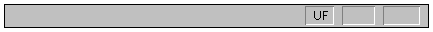

The status bar is displayed on the lower border of the CrypTool window. You can choose whether to display or conceal the status bar by selecting the Status Bar menu option from the menu View.
The left-hand area of the status bar contains text describing:
The right-hand area of the status bar indicates which of the following keys have been pressed:
| Display | Description |
| CAP | The CAPS LOCK key has been activated. |
| NUM | The NUM LOCK key has been activated. |
| SCRL | The SCROLL LOCK key has been activated. |